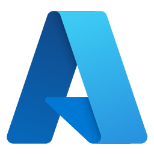
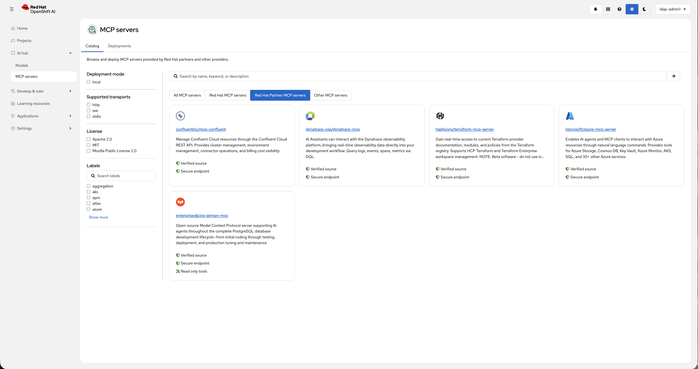

You've tried it. You've pulled a Model Context Protocol (MCP) server from a GitHub repo, wrestled it into a container, sorted out authentication yourself, and hoped it would hold up in production. That is the state of MCP adoption in the enterprise today—promising protocol, but painful deployment.
Red Hat OpenShift AI 3.4, part of the Red Hat AI portfolio, takes a different approach. We're introducing the MCP catalog (now in developer preview): a curated catalog of MCP servers that you can discover, deploy, and manage directly on Red Hat OpenShift. It ships pre-loaded with MCP servers from Red Hat, our technology partners, and the open source community, and we are actively adding more. You can also "bring your own" MCP servers—the same lifecycle management and runtime connectivity that powers the catalog applies to any MCP server you deploy on your cluster.
Try Red Hat OpenShift AI to explore the MCP catalog yourself.
This is not a static listing. Every MCP server in the catalog goes from discovery to running on your cluster, with lifecycle management and runtime connectivity built in. From there, it becomes consumable in gen AI studio, the interface in OpenShift AI where you experiment with and test AI agents and applications. This is the beginning of the enterprise MCP ecosystem we are building.
The MCP catalog: From discovery to deployment
Until now, AI hub in OpenShift AI focused primarily on models. With OpenShift AI 3.4, MCP servers join the catalog as first-class citizens. It's also a significant step toward a broader AI asset surface that will expand in upcoming releases.
Most MCP catalogs available today, including Smithery, Docker MCP Catalog, and the official MCP registry, focus solely on discovery. They help you find servers, but deployment, security, and lifecycle management are your responsibility. Often, this means downloading a container image of unknown provenance and hoping the next update does not break your workload.
The MCP catalog in OpenShift AI closes that gap. When you browse the catalog in AI hub, you are looking at MCP servers validated for enterprise use, featuring:
- Production-grade connectivity: streamable HTTP transport
- Secure hosting: images built on Red Hat Universal Base Image and scanned for vulnerabilities
- Automated deployment: when you select a server, the MCP lifecycle operator deploys it on your cluster, creating the Kubernetes resources and exposing the service
Once deployed, the MCP gateway handles runtime connectivity, providing identity-aware routing and per-tool metrics so your platform team knows exactly which agents are calling which tools.
The result is a governed path from discovery, to deployment, to consumption. Select, deploy, connect, consume.
Note that as of OpenShift AI 3.4, MCP lifecycle operator is available as developer preview, and MCP gateway is available as technical preview.
MCP servers ready to use
The catalog ships with 3 tiers of MCP servers, each addressing real enterprise workflows. Here's what's available today.
3 Red Hat MCP servers
Connect your AI agents directly to the platforms you already run.
- Red Hat OpenShift: Agents can query cluster state, manage workloads, and troubleshoot deployments through natural language. If a pod fails at 2 a.m., an engineer can simply ask the agent for the last 50 log lines and the resource status of the affected deployment. No context-switching between dashboards, no kubectl gymnastics.
- Red Hat Ansible Automation Platform: Connect agents to your automation workflows. An agent can trigger Ansible Playbooks, check job status, and orchestrate configuration changes across infrastructure. For agent-driven operations (AgentOps) teams, this means incident response workflows that span detection, diagnosis, and remediation without leaving the agent context.
- Red Hat Lightspeed (formerly Red Hat Insights): Surface platform intelligence and recommendations through your AI agents. Instead of teams manually reviewing Red Hat Lightspeed advisories, an agent can pull the latest recommendations, correlate them with the cluster state, and suggest remediation steps, bringing operational insights directly into agentic workflows.
5 technology partner MCP servers
Extend your agents into the broader enterprise stack.
 Confluent Cloud: Allow AI to manage and debug data streaming operations on Kafka and Flink.
Confluent Cloud: Allow AI to manage and debug data streaming operations on Kafka and Flink. EDB Postgres® AI: Connect agents to the EDB Postgres® AI platform for queries, schema management, and database operations, powered by the EDB pg-airman MCP server.
EDB Postgres® AI: Connect agents to the EDB Postgres® AI platform for queries, schema management, and database operations, powered by the EDB pg-airman MCP server. IBM Terraform: Let agents provision and manage infrastructure as code, bridging the gap between AI-driven decisions and infrastructure execution.
IBM Terraform: Let agents provision and manage infrastructure as code, bridging the gap between AI-driven decisions and infrastructure execution.
Microsoft Azure: Enable agents to manage Azure resources, provision services, and automate cloud operations alongside your OpenShift workloads. Dynatrace: Bring real-time insights into your agentic workflows. Agents can query performance data, get code-level insights for troubleshooting, optimization, and remediation across your environment.
Dynatrace: Bring real-time insights into your agentic workflows. Agents can query performance data, get code-level insights for troubleshooting, optimization, and remediation across your environment.
2 community MCP servers
Round out the data tier (listed in the catalog under "Other MCP servers").
 MongoDB: Query and manage document collections through your agents. Useful for retrieval-augmented generation (RAG) workflows and applications backed by unstructured or semi-structured data.
MongoDB: Query and manage document collections through your agents. Useful for retrieval-augmented generation (RAG) workflows and applications backed by unstructured or semi-structured data. MariaDB: Relational database connectivity for agents that need to query and manage structured data stores.
MariaDB: Relational database connectivity for agents that need to query and manage structured data stores.

To put this in concrete terms, before the MCP catalog, connecting any of these servers to your agents meant finding it on GitHub, building a container from source, debugging transport issues, and configuring authentication, all before you could make a single tool call. Now, you select it in the catalog and the MCP lifecycle operator handles the rest.
Explore the MCP Lifecycle Operator on GitHub to see how MCP servers are deployed and managed on Kubernetes.
Building the enterprise MCP ecosystem
The MCP servers you get in OpenShift AI 3.4 are just the beginning. We're building a comprehensive ecosystem designed for the demands of production.
- AI quickstarts: We are working with partners to deliver ready-to-run, industry-specific use cases. These playgrounds help teams move AI ideas from experimentation to production on open-source infrastructure.
- Scaling curation: Our validation process—from partner consent to technical scanning—is built to scale. As MCP servers mature, we will continue to add new assets to the pipeline.
- Enterprise governance: We are adding an enforcement layer to the foundation already laid by the MCP gateway. This includes supply chain controls to verify provenance, trust tiers for certified assets, and full auditability of the tool calls an agent makes.
Get started
The MCP catalog gives platform teams a governed, production-ready path from discovery to deployment, with curated servers, validated images, and lifecycle management on your cluster.
It's available now in Red Hat OpenShift AI 3.4 in developer preview. Try Red Hat OpenShift AI to explore the MCP catalog and deploy your first MCP server on OpenShift. Are you attending Red Hat Summit 2026 in Atlanta (May 11-14)? Come see the MCP catalog and MCP lifecycle operator in action.